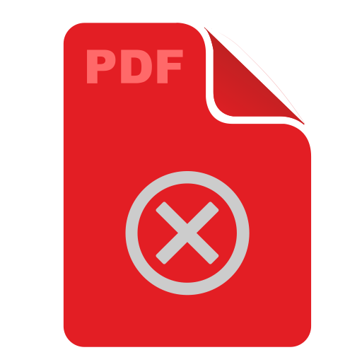

<div class="jobs-page">
    <div class="container">
        <div class="toolbar" ng-class="{'selection':selectedElements.length > 0,'detached container':detachToolbar}">
            <div class="toolbar-frame">
                <!-- refresh -->
                <div class="btn-group refresh-bar hide-when-selected">
                    <button type="button" class="btn btn-default refresh"ng-click="refresh()">
                        <span class="glyphicon glyphicon-refresh" ng-class="{refreshing:refreshing}" ></span>
                    </button>
                </div>
                <!-- search bar -->
                <div class="btn-group search-bar hide-when-selected">
                    <form ng-submit="submitSearch()">
                        <button class="search-bar-button" type="submit">
                            <span class="glyphicon" ng-class="{'glyphicon-search':!searching,'glyphicon-refresh refreshing':searching}"></span>
                        </button>
                        <div class="search-bar-text"><input type="text" ng-model="searchTerm" placeholder="Search" ng-change="changingSearch()"></div>
                    </form>
                </div>
                <!-- date filter -->
                <div class="btn-group date-filter-bar hide-when-selected">
                        <button class="date-fiter-bar-button" type="button" ng-click="openDateDialog($event)">
                            <span class="glyphicon glyphicon-calendar"></span>
                        </button>
                        <div class="date-filter-text">
                            <input type="text" date-range-picker="true" ng-model="dateFilter" placeholder="jobs date range">
                        </div>
                </div>
                
                <!-- cancel selection -->
                <div class="btn-group hide-when-unselected selection-bar">
                    <div class="cancel-selection im-a-pretty-clickable" ng-click="deselectAll()">
                        <span class="glyphicon glyphicon-arrow-left"></span>
                        <span>Cancel</span>                    
                    </div>
                    <div class="selection-count">
                        {{selectedElements.length}} Selected
                    </div>
                </div>
                
                <!-- selection activities -->
                <div class="btn-group hide-when-unselected">
                    <button type="button" class="btn btn-default btn-delete" ng-click="delete()">
                        <span class="glyphicon" ng-class="{'glyphicon-trash':!deleting,'glyphicon-refresh refreshing':deleting}"></span>
                    </button>
                    <button type="button" class="btn btn-default btn-delete-files" ng-click="deleteFiles()">
                        <span ng-show="deletingFiles"  class="glyphicon" ng-class="{'glyphicon-ok':doneDeletingFiles,'glyphicon-refresh refreshing':!doneDeletingFiles}"></span>
                        <span ng-show="!deletingFiles" clas></span>
                    </button>
                </div>
            </div>
        </div>
        
        <jobs-list items="jobs"></jobs-list>
    </div>
</div>